Project 2: Fun with Filters & Frequencies
Part 1: Fun with Filters
Overview
In part 1, we build intuition for how 2D convolutions and filtering work in image processing. We begin with the finite difference operators, defined below, which approximate derivatives in the horizontal and vertical directions. By convolving an image with these filters, we can highlight areas of rapid intensity change. This sets the foundation for later steps, where we compute gradient magnitudes, threshold edge maps, and explore more advanced filters like the derivative of a Gaussian.
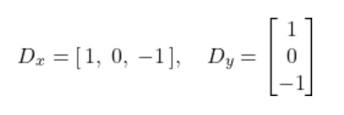
Part 1.1: Convolutions from Scratch!
In this subsection, we implemented the 2D convolution operation from scratch to better understand how filtering works at the pixel level. Convolution is the foundation of many image processing techniques, including blurring, sharpening, and edge detection. So writing our own versions helps us see exactly how kernels slide over an image and combine pixel neighbors.
We implemented two types of convolution, four-loop and two-loop convolution.
The four-loop convolution explicitly loops over every pixel and every kernel element, manually summing contributions.
def conv2d_four_loops(image, kernel):
H, W = image.shape
h, w = kernel.shape
pad_h, pad_w = h // 2, w // 2
padded = np.pad(image, ((pad_h, pad_h), (pad_w, pad_w)))
output = np.zeros_like(image)
for i in range(H):
for j in range(W):
result = 0.0
for m in range(h):
for n in range(w):
result += padded[i + m, j + n] * kernel[m, n]
output[i, j] = result
return output
Meanwhile, the two-loop convolution loops only over pixel positions, and the kernel sum is computed using NumPy on the extracted region.
def conv2d_two_loops(image, kernel):
H, W = image.shape
h, w = kernel.shape
pad_h, pad_w = h // 2, w // 2
padded = np.pad(image, ((pad_h, pad_h), (pad_w, pad_w)))
output = np.zeros_like(image)
for i in range(H):
for j in range(W):
region = padded[i:i + h, j:j + w]
output[i, j] = np.sum(region * kernel)
return output
Both functions zero-pad the image so the output has the same shape as the input.
To validate our code, we compared results against scipy.signal.convolve2d, which is a well-tested library function. The results were essentially identical, with only tiny numerical differences on the order of 1e-6. This confirms that our implementations are correct.
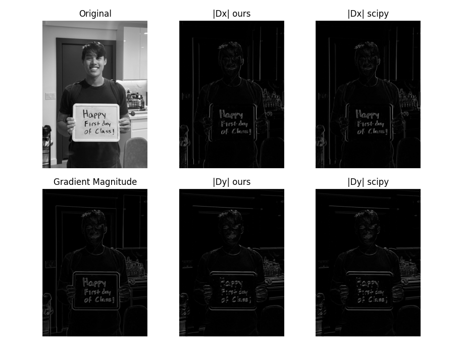
Part 1.2: Finite Difference Operator
Taking our work from part 1.1, we applied the finite difference filters to approximate the partial derivatives of a cameraman image in the x and y directions.
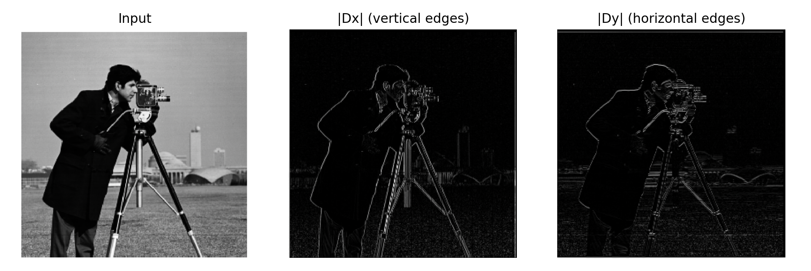
We then combined these responses into a gradient magnitude image, which captures edges in all directions. To turn this into a binary edge map, we applied a threshold to suppress noise while preserving meaningful edges.
I experimented with threshold values in the range 0.15–0.30 and observed how the resulting edge maps changed. Lower thresholds included weaker edges but also introduced noise, while higher thresholds reduced noise but risked losing fine details. I found that a value of 0.20 provided the best balance, producing a clean edge map that retained important details from the cameraman without excessive noise from the background.
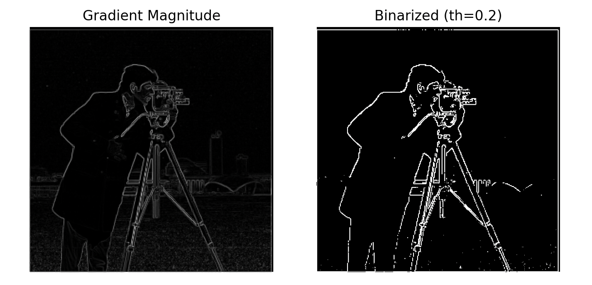
Part 1.3: Derivative of Gaussian (DoG) Filter
In Part 1.3, we extended our finite difference edge detection by incorporating Gaussian smoothing to reduce noise. We constructed a 2D Gaussian filter using cv2.getGaussianKernel with parameters ksize = 7 and σ = 1.2, and applied it in two equivalent ways.
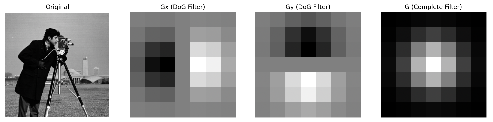
In the first approach, we blurred the image with the Gaussian filter and then applied the finite difference operators Dx and Dy to compute smoothed derivatives. In the second approach, we built Derivative-of-Gaussian (DoG) filters by convolving the Gaussian with Dx and Dy beforehand, then applied these directly to the image. Both methods produced nearly identical results, with gradient magnitude maps that matched up to tiny numerical differences, confirming the theoretical equivalence of “smooth then finite differences” and “differentiate the Gaussian.”
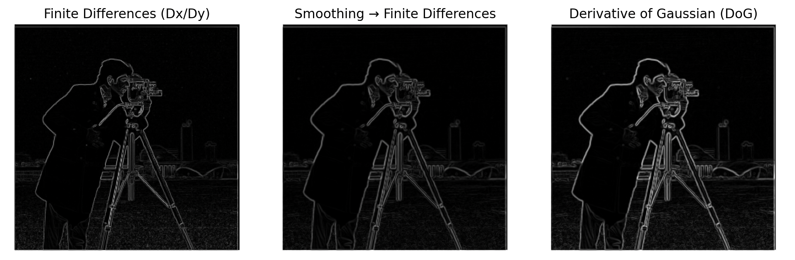
Compared to raw finite differences, which produced noisy edge maps, the Gaussian-smoothed and DoG results yielded cleaner, more continuous edges with much less noise, though the edges appeared slightly thicker.
This demonstrated both the importance of smoothing before differentiation and the efficiency of DoG filters in combining the two operations into a single step.
Part 2: Fun with Frequencies!
Overview
Summarize how you used frequency-domain ideas (e.g., sharpening via high-pass, hybrid images by combining low-pass and high-pass content) and what parameters you tuned (cutoffs, sigmas).
Part 2.1: Image “Sharpening”
In Part 2.1, I implemented the unsharp mask filter, a technique that enhances high-frequency components in images to sharpen them. Sharpness in images is tied to edges and fine details, which correspond to high frequencies.
First, I generated a blurred version of the original image by convolving with a Gaussian kernel. Using σ=1.2 and a 7×7 kernel provides a moderate blur large enough to suppress noise but not so large that edges are lost. Subtracting this blurred image from the original isolates the high frequencies.
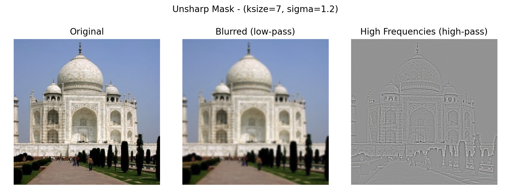
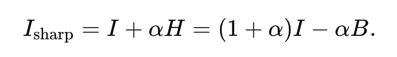
The sharpened result is then formed by adding a scaled version of these high frequencies back. The parameter α controls the sharpening strength. At α=0.5, the effect is subtle; at α=1.0 and α=1.5, the image looks sharp and natural; at α=2.0 the effect is almost, and higher values risk producing halos or unnatural contrast.
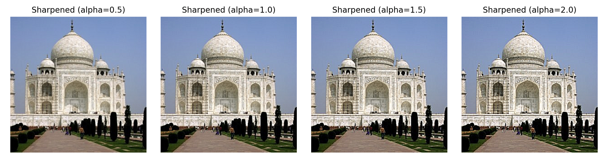
This approach demonstrates how combining a low-pass blur with a weighted high-pass boost can enhance image clarity while maintaining realism with α=1.0 and α=1.5 providing the best balance.
Here are some additional sharpened images of my choosing.
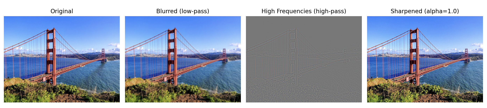
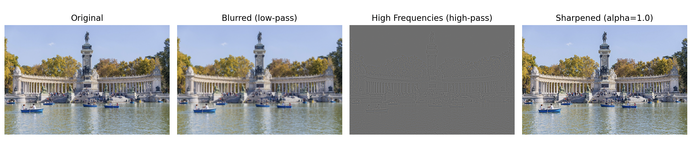
Part 2.2: Hybrid Images
In Part 2.2, we created hybrid images by combining the low frequencies of one image with the high frequencies of another. After aligning the two inputs using the provided alignment code, we constructed the low-pass image by convolving the “far-view” image with a Gaussian kernel. The high-pass image was obtained by subtracting a blurred version of the “near-view” image from itself, which removes smooth structures and preserves only fine edges and detail.

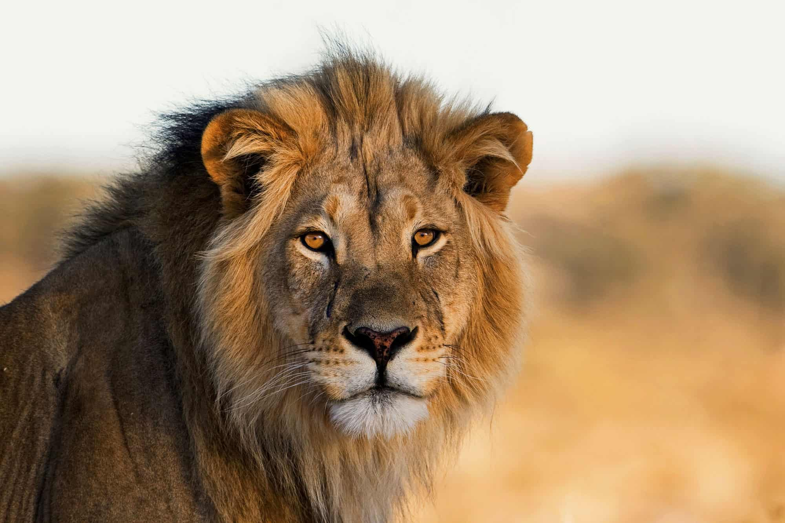
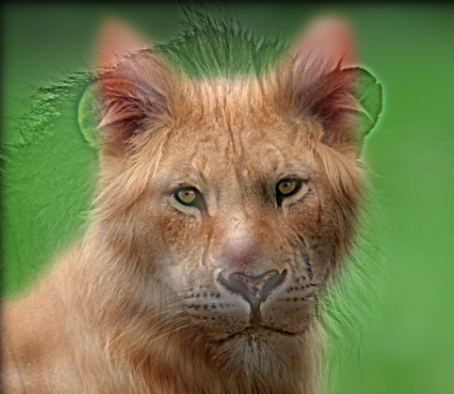
The final hybrid was then formed by adding the low-pass and high-pass results together with cutoff frequencies set by σ_low = 8.0 for the low-pass and σ_high = 5.0 for the high-pass, which gave the clearest perceptual switch. Increasing sigma in the low-pass filter removes more detail and makes the far-view subject stronger, while decreasing sigma in the high-pass filter keeps only sharper edges and makes the near-view subject more visible.
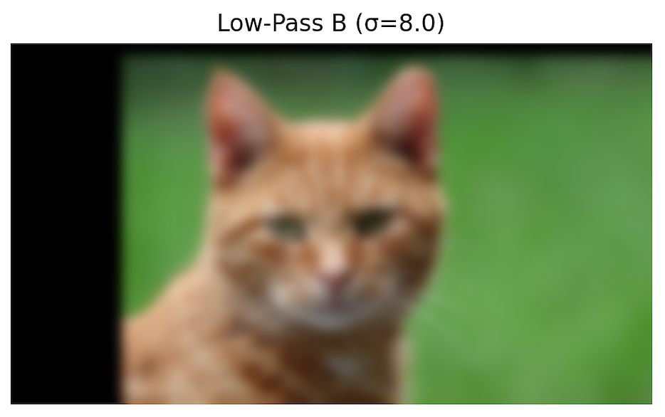
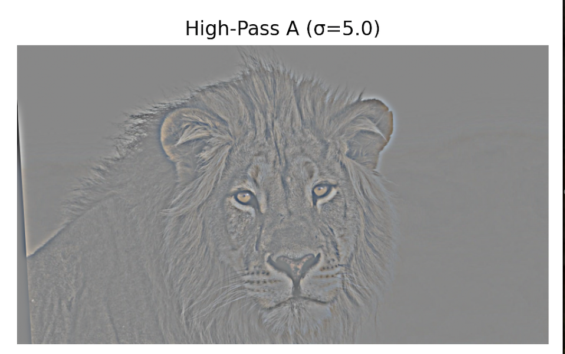
We used Fourier transforms to visualize the effect of filtering. The log-magnitude spectrum of the low-pass image showed energy concentrated near the origin (low frequencies), while the high-pass spectrum emphasized energy away from the origin (high frequencies). The logarithmic scale was essential to reveal both low- and high-frequency content in the same plot, since raw magnitude spectra are dominated by low-frequency energy. These visualizations confirmed that our filters successfully separated the images into complementary frequency bands.
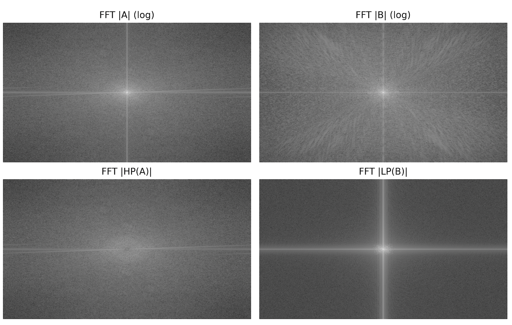
From up close, the hybrid reveals the high-frequency subject, while from farther away the low-frequency structure dominates—demonstrating how spatial Filtering and frequency decomposition can be combined to manipulate perception.
Below are additional hybrid images I’ve put together.


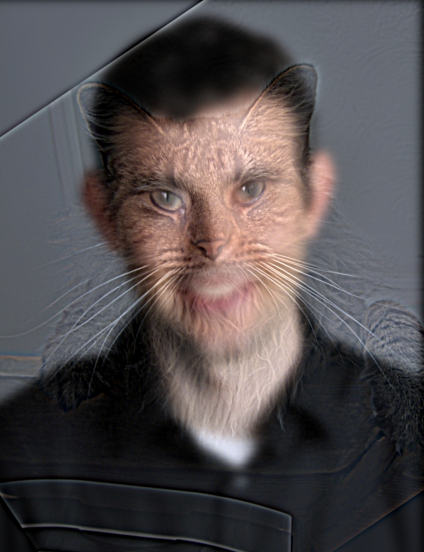
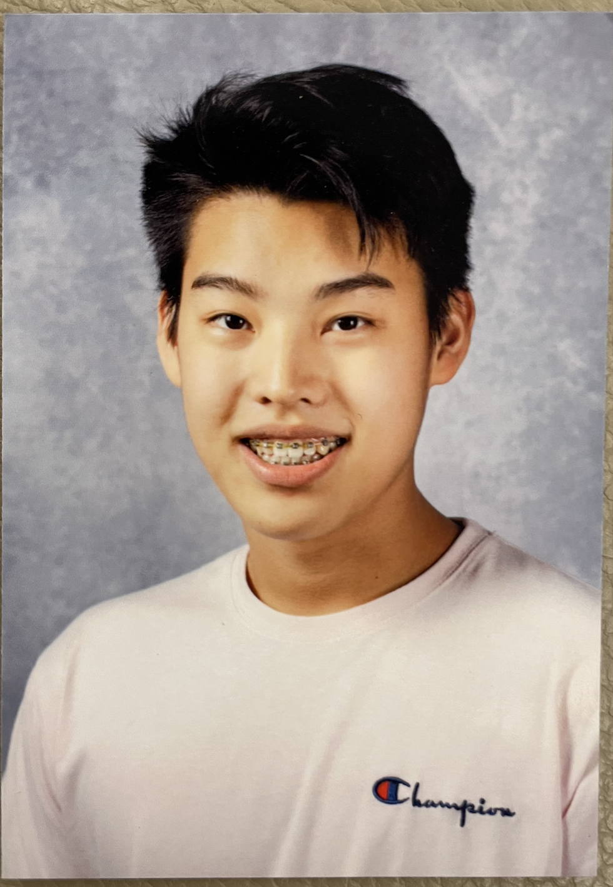
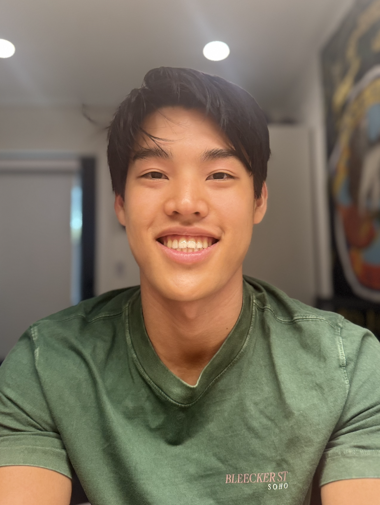
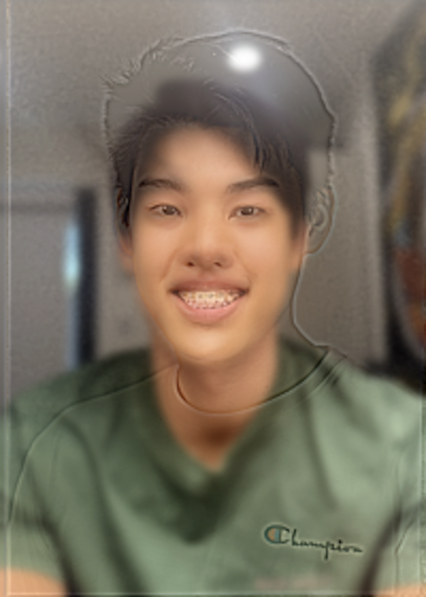
Part 2.3: Gaussian and Laplacian Stacks
Following up on our work in hybrid images, we implemented Gaussian and Laplacian stacks to explore multiresolution blending. A Gaussian stack is built by repeatedly applying a Gaussian blur with increasing σ values, producing progressively smoother versions of the image without downsampling. The Laplacian stack is then obtained by subtracting adjacent Gaussian levels, effectively isolating band-pass frequency information at different scales, with the final residual level capturing the coarsest structure. Unlike a pyramid, where images are reduced in resolution at each level, a stack keeps all images the same size, which makes direct visualization and pixelwise blending simpler.
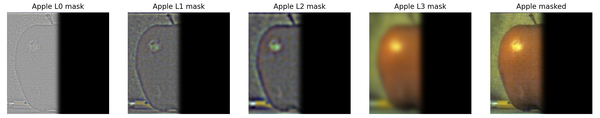
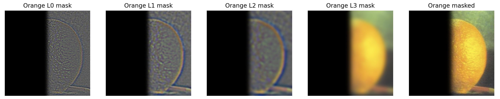
To create the “Oraple,” we constructed Laplacian stacks for both images, applied a soft half-mask at each level to keep the right side of the apple and the left side of the orange, and then blended the masked Laplacian levels together. Finally, we reconstructed the full image by summing all blended Laplacian levels, producing a seamless composite where the transition between apple and orange is smooth across frequencies.
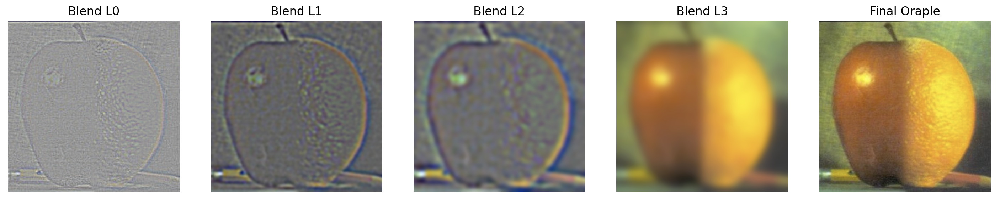
Part 2.4: Multiresolution Blending
Talk about irregular masks and how we implemented them.

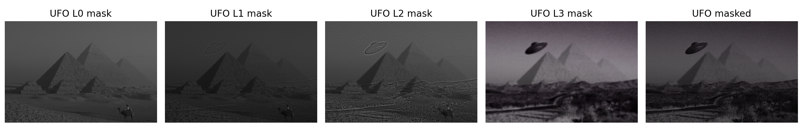
Using what we built from part 2.3, we blended the UFO and the pyramids of Egypt together.
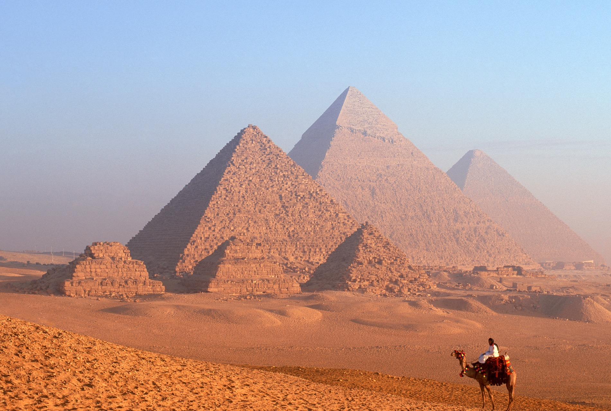
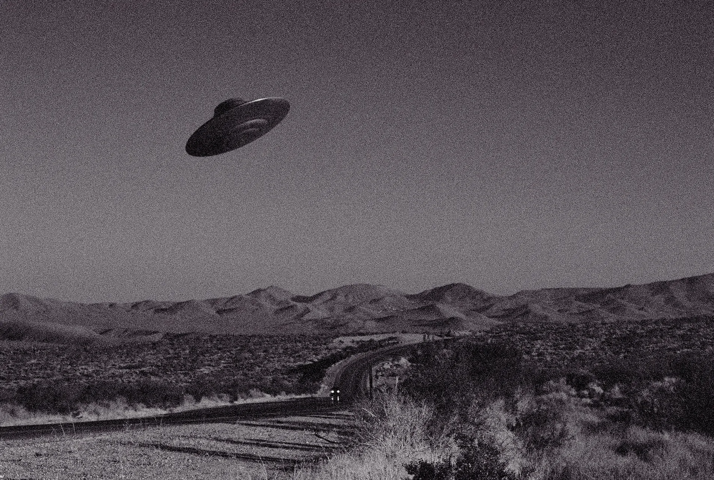

Here is another fun challenge where I tried to blend the Death Star from Star Wars into our moon.
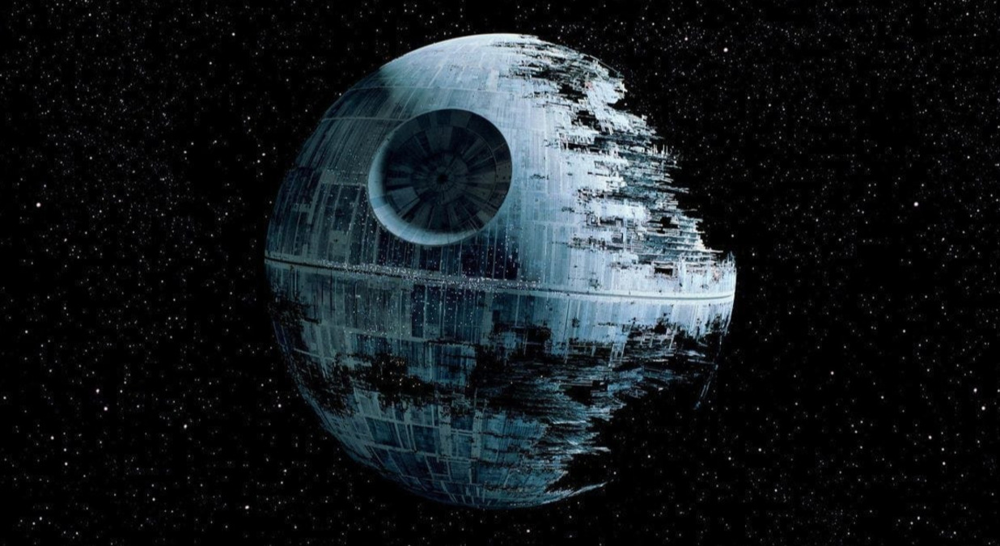

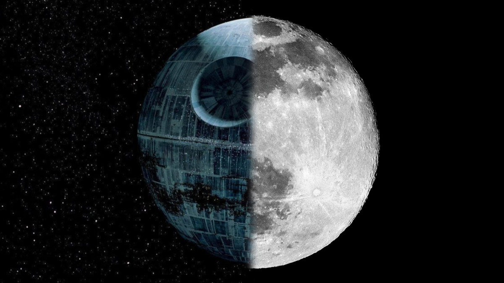
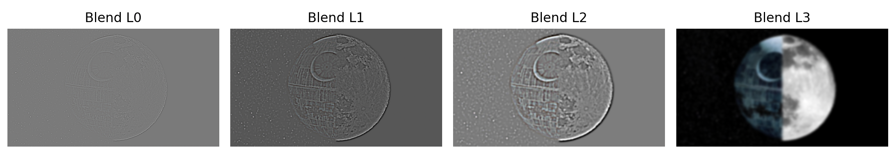